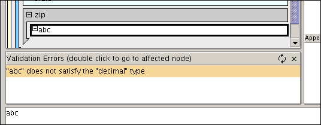

Pollo supports schema languages to help you edit your documents.
For those who don't know what a schema language is: a schema languages
defines the allowed structure of an XML document. It does this by specifying
the set of valid element names, their attributes, and the content allowed
in the elements. A document can then be validated against the schema, to
check if the document conforms to the structure described in the schema.
Pollo needed a schema language that supports namespaces. Yet that schema language should be very simple, so that it could be implemented in a matter of hours. Or there should be a library available to quickly embed support for that schema language in Pollo. XML DTD's, although relatively simple, don't support namespaces. So I decided to invent my own little schema language.
Since then, support for mainstream schema languages has been added (XML Schema, DTD, Relax NG, some others), although maybe in a controversial manner (see further on).The above features are thought out to be usefull for editing documents,
and not for validating a document against it.
Here's a small extract from the Cocoon Sitemap schema as an example:
<schema xmlns:map="http://apache.org/cocoon/sitemap/1.0">
<element name="map:generate">
<attributes>
<attribute name="type" readvaluesfrom="/map:sitemap/map:components/map:generators/map:generator/@name"/>
<attribute name="src"/>
<attribute name="label"/>
</attributes>
<allowedsubelements names="map:parameter"/>
</element>
<element name="map:action-set/map:act">
<attributes>
<attribute name="type" readvaluesfrom="/map:sitemap/map:components/map:actions/map:action/@name"/>
<attribute name="src"/>
<attribute name="action"/>
</attributes>
<allowedsubelements names=""/>
</element>
[...]
</schema>
Notice that the second element definition only applies to map:act elements occuring as child of map:action-set
The syntax of Pollo's schema language may be a bit ugly, but that's because
it was created (and implemented) in just a couple of hours. If someone
wants to improve it, feel free.
It is not possible to validate a document against a Pollo schema, Pollo
schemas can only be used to guide editing.
Pollo supports a range of schema languages through the "Multi Schema
Validator" library from Sun. More precisely the following languages
should work: XML Schema, DTD, Relax NG, Relax Core, Relax ns and Trex.
These schema languages can be used in Pollo both to guide you while editing
(i.e. to show the available elements and attributes), and to validate your
document against it.
One important thing about schema languages like XML Schema and Relax NG
is that they allow you to reuse the same element name in different places
On each place the element name is used, it is possible to specify different
attributes and a different content model. While this is a powerfull feature,
it makes things a lot harder for XML editors. After all, the editor cannot
determine from the element name alone what attributes it can have, but it
should look in what context the element occurs. But while you're editing
a document, the document may be in an invalid state making it impossible to
determine the right type of the element. Pollo works around this by looking
only at the element name, and by showing all elements that can be inserted
and showing all attributes that can occur on the element with that name,
regardless of the context in which the element is used.
If you want to see precisely what can occur inside the element, or what
attributes it can have, select that element, and then choose 'Schema | Show
Content Model' in the menubar. This will validate the document up to the
selected element, and then asks the validator what content it expects there,
which is then displayed. (This is an experimental feature).
To validate your document against the schema, choose 'Schema | Validate
document' in the menubar. If the document is valid, a message box will be
displayed to let you know it is. If any validation errors occured, a panel
will be displayed to show them. By double clicking on an item in the validation
error list, you will jump to the location in the document where that error
was detected.

Pollo will not automatically use the DTD declared using DOCTYPE in your document.
Pollo does however support using DTD's through MSV, just select them in
the 'View Type' dialog you get after opening a file. There's one important
limitation though: you cannot use DTD's if you use namespaces.